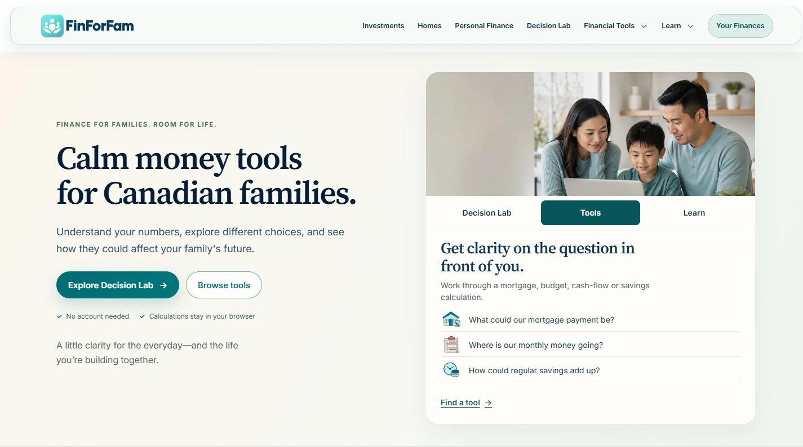

Product builder & software developer
Based in Halifax, Nova Scotia
I bring clarity to complex problems. Then I build.
My experience leading people and operations shapes how I build software. With Sports Performance Platform, I’m bringing product direction, web and mobile development, and the underlying systems together for coaches and athletes.
Explore my work on SPP01 The defining project
In developmentSports Performance
Platform.
Coaches plan and review.
Athletes need a clear next step.
SPP connects the context behind a training decision with the work an athlete is asked to do. It brings planning, readiness, and progress into a shared system.
Coach Portal development previews · Fictional demonstration data · Features may change · Selected crops shown on mobile
My role
Founder & developer
My responsibility spans product direction and implementation across the Coach Portal, Player experience, shared APIs, data model, and permissions. I connect those decisions to the workflows they serve.
React & TypeScript · React Native & Expo · NestJS · Prisma & MySQL
02 Inside SPP / A decision that matters
A training plan can change.
An athlete’s history shouldn’t.
Coaches need room to change what comes next. An athlete’s completed work needs to retain its meaning. SPP’s documented model separates prescribed training from performed results.
Conceptual summary of the documented model.
Read the full training-history decisionSource & evidence note
The public engineering account describes separate prescription data and performed results. This is an author-described design; the audit did not inspect private application code or verify this behaviour with executable tests. Screenshots illustrate the interface, not the history-preservation behaviour.
03 / Selected product
FinForFam
Making household tradeoffs easier to explore.
FinForFam brings financial tools and plain-language explanations together for Canadian families.
Founder & product lead
My work spans brand direction, user experience, content, and development—from the first impression to the tools themselves.



04 Leadership & perspective
Clarity is a
people skill,
too.
I operated the Halifax Code Ninjas centre, where the work connected technology, learning, and the day-to-day responsibility of running a business.
My work included collaborating with Code Ninjas head office on the sales process and teaching client-retention techniques.
That experience shapes how I approach software: explaining the reasoning, making responsibilities clear, and helping people understand the next step.
The Code Ninjas chapterEntrevestor · January 2020 · Historical operating role
Let’s start a conversation
Have a project or
opportunity in mind?
Get in touch about a role, a product, or Sports Performance Platform.